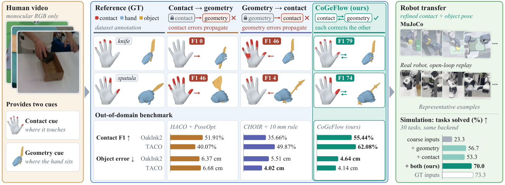

01 / Contact & dexterous manipulation
Submitted to CVPR 2027CoGeFlow: Coupled Contact and Geometry Estimation for Dexterous Retargeting
First author · SJTU research collaboration · Monocular video to robot manipulation
Helping robots learn not just how a human hand moves, but where it makes contact. CoGeFlow jointly refines visual contact estimates and object placement, so each can correct errors in the other.

Method
A dual-branch conditional flow model jointly refines contact on 424 palmar hand vertices and wrist-relative object pose. Both states exchange evidence at every integration step; refined references guide grasp selection and physics-based optimization for open-loop execution.
Reported results
70.0% simulation task success across 30 tasks, versus 23.3% with coarse inputs. 85.7% hardware trial success (54/63) across nine tasks.
Simulation: one planning run per task. Hardware: seven independent planning-and-execution trials per task.